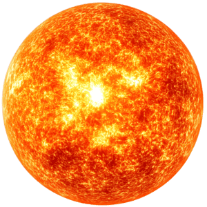
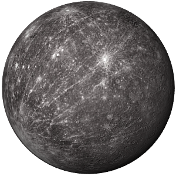
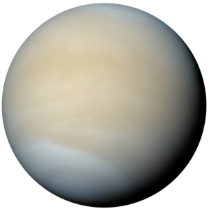
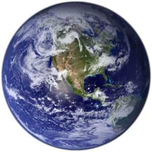
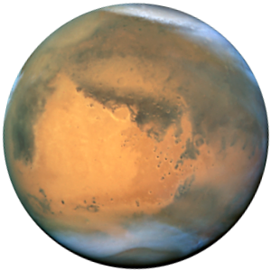
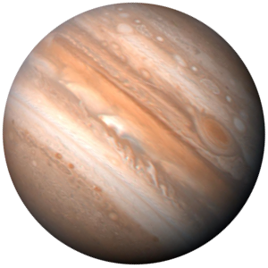
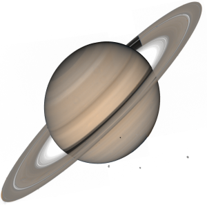
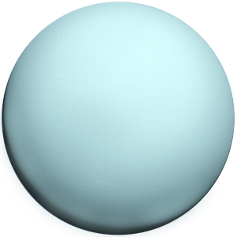
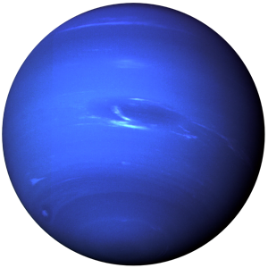

Сонце
Центральна зірка нашої системи, що містить 99.8% всієї своєї маси. Це майже ідеальна сфера гарячої плазми, яке живить життя на Землі завдяки ядерному синтезу в його ядрі.

Меркурій
Найменша та найшвидша планета, що обертається навколо Сонця кожні 88 днів. Це світ екстремальних відчуттів, яка має масивне залізне ядро та перепади темпервтури понад 1000 градусів між днем і ніччю.

Венера
"Злий близнюк" Землі. Схована за густими хмарами сірчаної кислоти. Венера страждає від парникового ефекту, завдяки якому поверхня планети така гаряча, що може розплавити свинець, а її атмосфера така щільна, що може розчавити підводний човен.

Земля
Єдиний відомий світ, де існує життя, захищений ідеальною атмосферою та потужним магнітним полем. Це динамічний світ руху тевтонських плит і безмежних океанів.

Марс
Холодний і пустинний світ, вкритий іржею із оксиду заліза. Марс - це дім для найвищих вулканів та найглибокіших каньйонів у Сонячній Системі, і ця планетв є головним обʼєктом колонізації людьми.

Юпітер
Газовий гігант більш масивний ніж усі інші планети разом. Зі своєю культовою Великою Червоною Плямою та 95 супутниками, вона діє як космічний пилосос, захищаючи внутрішню Сонячну Систему від ударів астероїдів.

Сатурн
Знаменитий своєю вражаючою та складною кільцевою системою, яка зроблена із льоду та каміння. Сатурн - це найменш щільнв планета, така легка, що вона могла би плавати у великій ванні із водою.

Уран
Льодовий гігант, що обертається на боці, ймовірно через давнж зіткнення. Вона має найхолоднішу атмосферу у Сонячній Cистемі та система із 13 вертикальних кілець.

Нептун
Найвіддаленіша планета, темний та холодний світ під поривами надзвукових вітрів. Це була найперша планета, яка була знайдена за математичним прогнозом, а не телескопом.